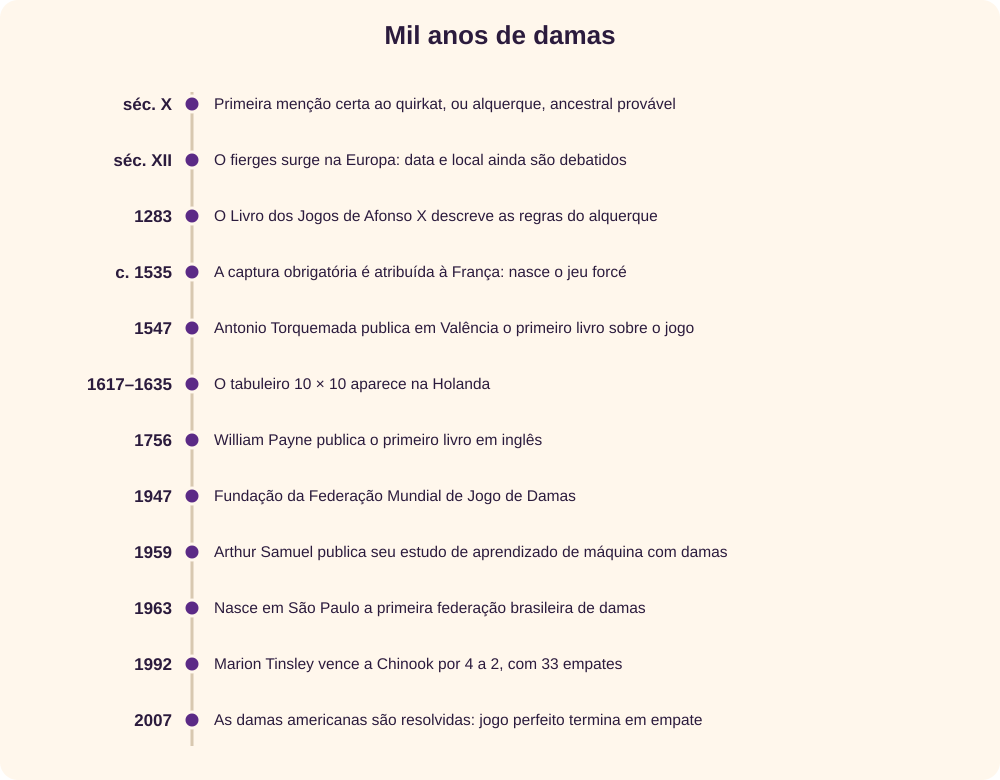
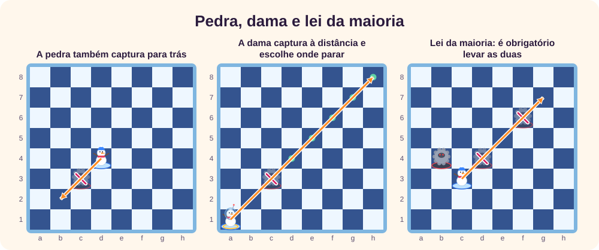
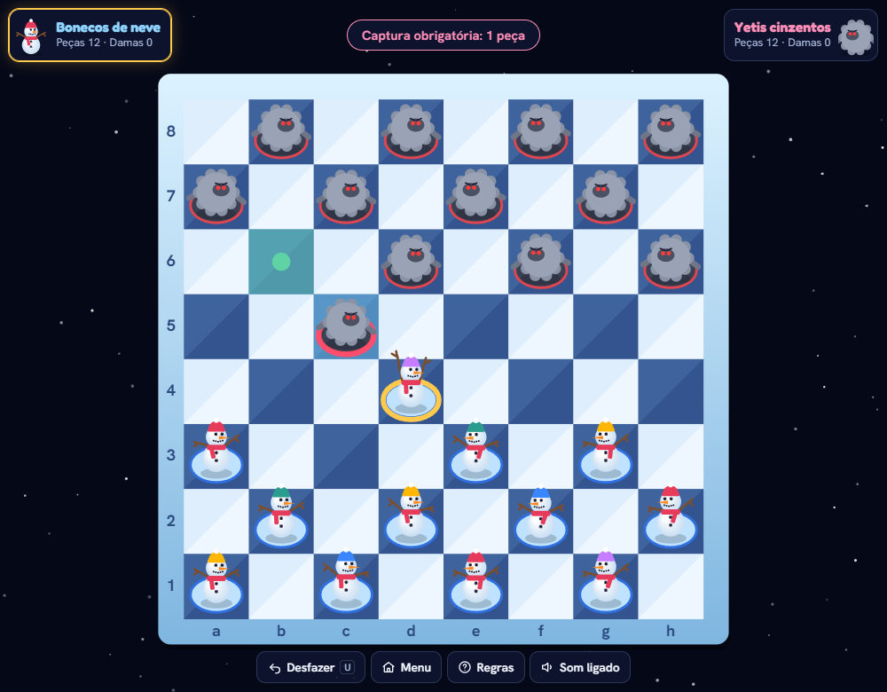
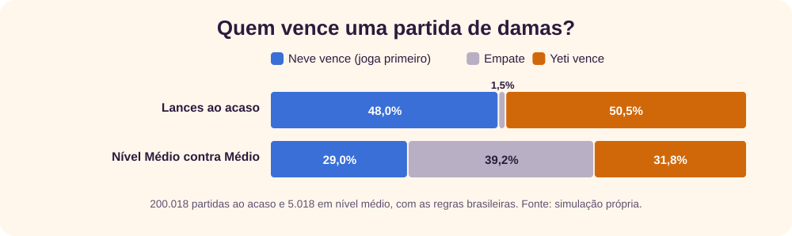
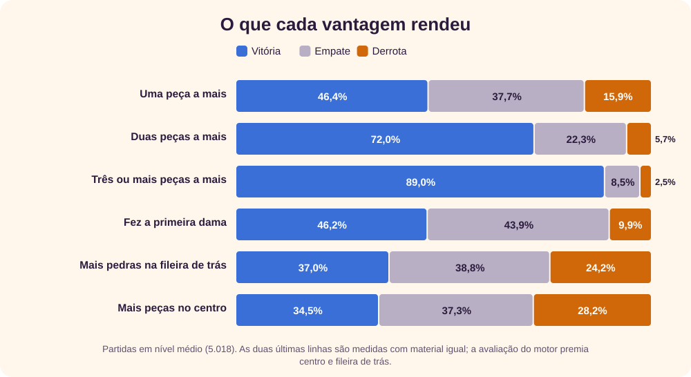
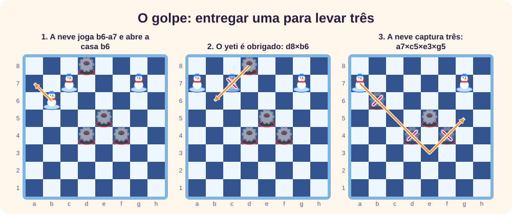
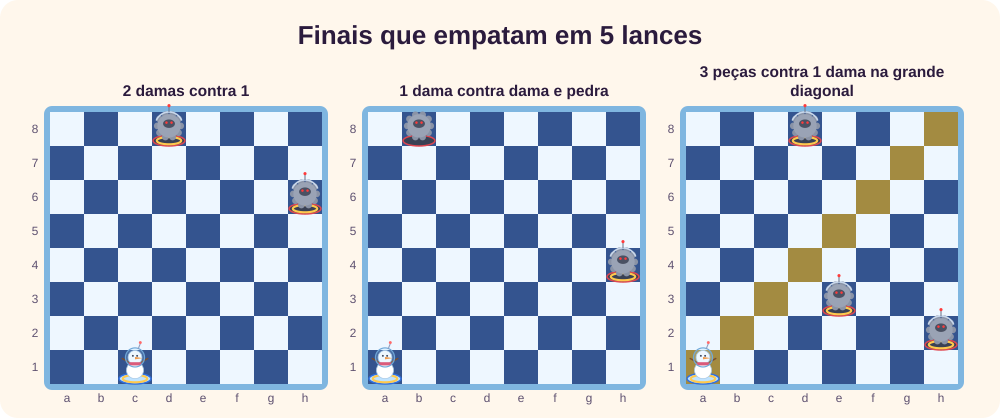

O jogo
As damas parecem simples: 24 peças, um tabuleiro e um único tipo de movimento. Mesmo assim, resolver a variante americana exigiu quase vinte anos de computação. [9]
Este tutorial conta de onde o jogo veio, resume as regras oficiais brasileiras e mostra o que milhares de partidas simuladas dizem sobre vantagem, dama e empate. Depois, passa às estratégias e às táticas que decidem uma partida. Para praticar, use o Damas de Gelo, em que bonecos de neve enfrentam os yetis cinzentos de My Little Ice World. [12]
A história
A origem das damas é menos certa do que muitos textos sugerem. Costuma-se falar em tabuleiros de Ur, de cerca de 3000 a.C., e em entalhes no templo egípcio de Kurna, de 1400 a.C. Mas o jogo de Ur se parecia mais com o gamão, e os entalhes de Kurna provavelmente são muito posteriores ao templo. [2] [3]
Do alquerque ao fierges
O ancestral mais provável é o alquerque, ou quirkat. A primeira evidência segura é uma menção no Kitab al-Aghani, cujo autor morreu em 976. As regras só aparecem por escrito no Livro dos Jogos de Afonso X, de 1283. [2] [3]
A adaptação ao tabuleiro de xadrez gerou o fierges, cujas peças se chamavam ferses. Aqui as fontes divergem: uma federação e outras obras apontam o sul da França no século XII, o Guinness cita a fronteira entre França e Espanha, e uma história especializada defende a Inglaterra, em data anterior a 1426. [2] [4] [5]

A regra que criou o jogo moderno
Por volta de 1535, a captura obrigatória é atribuída à França. O jogo novo se chamou jeu forcé, e o antigo passou a ser o jeu plaisant. Essa regra transformou as damas num jogo de combinações, porque permite obrigar o adversário a jogar onde você quer. [2]
O primeiro livro conhecido é de Antonio Torquemada, publicado em Valência em 1547. O primeiro em inglês é de William Payne, de 1756, com prefácio de Samuel Johnson. [3] [4] O tabuleiro 10 × 10 já aparece na Holanda em 1617 e em uma pintura de 1635, o que enfraquece a lenda de que teria sido inventado em Paris no século XVIII. [2] [3]
As damas no Brasil
Costuma-se dar como certo que o jogo chegou com os primeiros colonizadores, embora essa seja uma dedução a partir da sua popularidade na Europa, não um registro. A história organizada é mais clara: o livro Ciência e Técnica do Jogo de Damas, de G. Izidoro e J. Cardoso, saiu em 1941; a Federação Paulista de Damas, primeira do país, foi fundada em 5 de abril de 1963; o I Campeonato Brasileiro ocorreu em São Pedro da Aldeia (RJ) em setembro de 1967, vencido por José Carlos Rabelo; e o Brasil estreou num mundial em Bamako, no Mali, em dezembro de 1979. [6]
As damas e os computadores
Arthur Samuel entrou na IBM em 1949 e desenvolveu no IBM 701 um programa que melhorava jogando contra si mesmo, tema do seu artigo de 1959 sobre aprendizado de máquina. [7] [8] Depois, o programa venceu Robert Nealey, que se dizia mestre: a IBM data o feito em 1962, e o artigo da Science, em 1963. [7] [9]
O grande adversário humano foi Marion Tinsley, campeão mundial de 1955 a 1958 e de 1975 a 1991, que perdeu pouquíssimas partidas em décadas de carreira. Em 1992, ele venceu o programa Chinook por 4 a 2, com 33 empates. A revanche de 1994 foi interrompida após seis empates, quando Tinsley abandonou por motivos de saúde. [10]
Em 2007, a equipe de Jonathan Schaeffer publicou a solução das damas americanas: com jogo perfeito dos dois lados, a partida empata. [9]
↑ Voltar ao topoAs regras
Este resumo segue as regras oficiais da Confederação Brasileira de Damas para o tabuleiro de 64 casas. [1] [11]
- Início: 12 peças de cada lado, nas casas escuras, com a grande diagonal à esquerda de cada jogador. As brancas começam; aqui, os bonecos de neve.
- Pedra: anda uma casa na diagonal, só para a frente, mas captura para a frente e para trás.
- Dama: anda quantas casas quiser em qualquer diagonal e, ao capturar, pode parar em qualquer casa livre depois da peça.
- Captura obrigatória: não existe “sopro”. Duas peças juntas na mesma diagonal não podem ser capturadas.
- Lei da maioria: é obrigatório o lance que captura mais peças. Pedra e dama valem o mesmo nessa conta.
- Coroação: a pedra só vira dama se terminar o lance na última fileira. Se apenas passar por ela durante uma captura, continua pedra.
- Durante a captura: as peças só saem no fim do lance, e a mesma peça não pode ser capturada duas vezes. Pode-se passar mais de uma vez pela mesma casa vazia.
- Objetivo: capturar ou imobilizar todas as peças do adversário.

Quando a partida empata
- A mesma posição aparece pela terceira vez, com o mesmo jogador na vez.
- 20 lances seguidos de damas de cada jogador, sem captura nem movimento de pedra.
- 5 lances de cada jogador nos finais listados na seção Finais.
Jogando Damas de Gelo
No menu, escolha entre jogar contra o computador ou a dois no mesmo aparelho. Contra o computador, escolha também o lado e a dificuldade. A partida fica salva no navegador, e o botão Continuar partida a retoma depois.
| Ação | Mouse ou toque | Teclado |
|---|---|---|
| Selecionar uma peça | Clique na peça | Setas e Enter |
| Mover ou capturar | Clique na casa verde | Setas e Enter |
| Cancelar a seleção | Clique em outra casa | Esc |
| Desfazer | Botão Desfazer | U |
Ao selecionar uma peça, os destinos aparecem em verde. Havendo captura obrigatória, o aviso no alto indica quantas peças é preciso levar, e as peças que podem jogar pulsam em rosa. Nas capturas em sequência, a peça segue sozinha quando só existe um caminho.

Bonecos de gorro e yetis sem capacete são pedras. O capacete de astronauta e o anel dourado na base marcam a dama. O jogo aplica sozinho as regras de empate e conta os lances; em torneios oficiais, essa contagem cabe aos jogadores. [1]
A força de cada nível
| Duelo | Partidas | Vitórias do mais forte | Empates | Derrotas |
|---|---|---|---|---|
| Médio contra Fácil | 624 | 619 (99,2%) | 5 (0,8%) | 0 (0,0%) |
| Difícil contra Médio | 78 | 57 (73,1%) | 11 (14,1%) | 10 (12,8%) |
Médio e Difícil enxergam adiante: o Médio examina cinco lances, com uma pequena dose de acaso, e o Difícil pensa por cerca de um segundo a cada jogada. O Fácil olha só dois lances e, em 30% das vezes, joga ao acaso. A amostra do Difícil é pequena, e a força dele depende da velocidade do aparelho.
↑ Voltar ao topoO tamanho do jogo
Quantas partidas diferentes existem? Dá para contar exatamente as sequências de lances possíveis a partir da posição inicial, aplicando as regras brasileiras. Na primeira jogada há 7 opções; depois de dez lances (cinco de cada lado), já são mais de 21 milhões de caminhos.
| Lances jogados | Sequências possíveis |
|---|---|
| 1 | 7 |
| 2 | 49 |
| 3 | 302 |
| 4 | 1.469 |
| 5 | 7.473 |
| 6 | 37.628 |
| 7 | 187.302 |
| 8 | 907.836 |
| 9 | 4.431.847 |
| 10 | 21.566.622 |
Para comparar: o espaço das damas americanas tem cerca de 5 × 1020 posições, e a sua solução exigiu um banco com 3,9 × 1013 posições de até dez peças. [9]
Na prática, um jogo ao acaso dura em média 48 lances somando os dois lados, e cada jogador tem em média 5,3 opções por vez. A captura obrigatória aparece em 31% das posições, e em 6% é preciso capturar ao menos duas peças. Ou seja, em quase um terço do tempo o lance já está imposto pela regra. É por isso que calcular a resposta forçada vale mais do que memorizar aberturas.
↑ Voltar ao topoQuem vence?
As probabilidades a seguir vêm de simulação, não de uma fórmula: não existe conta exata para quem vence um jogo não resolvido. Foram 200.018 partidas com lances ao acaso e 5.018 partidas entre dois computadores em nível Médio, usando o motor e as regras do Damas de Gelo.

Dois resultados chamam a atenção:
- Saber jogar faz o empate surgir. Ao acaso, só 1,5% das partidas empatam. Entre computadores de mesmo nível, são 39,2%. Dos empates em nível Médio, 67% vieram da regra dos 5 lances em finais de poucas peças.
- Sair na frente não ajudou. Quem joga por segundo venceu um pouco mais: 50,5% contra 48,0% ao acaso (margem de ±0,2 ponto) e 31,8% contra 29,0% em nível Médio (margem de cerca de ±1,3 pontos). A diferença é pequena e não prova nada sobre o jogo perfeito.
O primeiro lance importa?
O motor escolheu os lances, então a amostra não é igual para todos:
| Primeiro lance | Partidas | Neve vence | Yeti vence | Empate |
|---|---|---|---|---|
a3-b4 | 3.168 | 27,5% | 33,3% | 39,2% |
e3-f4 | 325 | 32,9% | 28,3% | 38,8% |
e3-d4 | 321 | 30,8% | 27,4% | 41,7% |
g3-f4 | 310 | 27,7% | 30,0% | 42,3% |
c3-b4 | 306 | 34,0% | 27,8% | 38,2% |
c3-d4 | 305 | 33,1% | 30,5% | 36,4% |
g3-h4 | 283 | 30,0% | 32,9% | 37,1% |
Para os seis lances menos usados, as amostras têm cerca de 300 partidas e margem próxima de ±5 pontos: as diferenças entre eles cabem no ruído. Já a3-b4, o favorito do motor, deu resultado pior à neve do que a média dos outros lances. Isso sugere um viés da avaliação do motor, não uma lição de teoria de aberturas.
O que vale a vantagem
Para cada partida em nível Médio, registramos a primeira vez que cada situação surgiu numa posição calma, sem captura disponível para quem jogava, e o resultado final para o lado que tinha a vantagem:

- Uma peça a mais não ganha sozinha: 46,4% de vitórias, e quem estava atrás ainda venceu 15,9% das vezes. Com duas, a vitória sobe a 72,0%; com três ou mais, a 89,0%.
- A primeira dama pesa, mas não decide: quem a fez venceu 46,2% das vezes e perdeu só 9,9%, mas 43,9% das partidas ainda empataram.
- Fileira de trás e centro ajudam menos: com material igual, ter mais pedras na fileira de trás no 20.º lance rendeu 37,0% de vitórias contra 24,2% de derrotas; ter mais peças no centro no 16.º lance, 34,5% contra 28,2%.
Estratégia
Antes de cada lance, faça uma pergunta: que captura este movimento obriga, para mim ou para o adversário? Como capturar é obrigatório, todo lance também é uma ordem dada ao outro lado. Com isso em mente, estes princípios orientam a maioria das decisões:
- Mantenha as peças unidas. Duas peças juntas na mesma diagonal não podem ser capturadas, [1] então uma peça apoiada por trás está protegida naquela direção.
- Prefira o centro, sem exagero. Uma peça no centro ameaça e se move nos dois sentidos. Na borda, ela não pode ser capturada, mas tem só um caminho e controla menos.
- Segure a fileira de trás. Para a neve,
c1ee1; para os yetis,d8ef8. Essas pedras atrasam a dama adversária. Solte-as quando precisar de lances ou quando o tabuleiro já estiver vazio. - Com vantagem, troque. Uma peça a mais pesa mais quando há menos peças. Mas cuidado: se a troca levar a um final de 5 lances, a vantagem pode virar empate.
- Atrás no placar, complique. Evite trocas e procure posições com muitas capturas possíveis, em que uma combinação pode virar o jogo.
- Conte os lances livres. Quem fica sem lance seguro acaba entregando peças. Às vezes, um lance tranquilo na borda vale mais do que avançar, porque obriga o outro a se comprometer.
- Não corra atrás da dama a qualquer preço. Uma dama sem apoio pode ser presa, e os números acima mostram que ela não garante a vitória.
Táticas
Táticas nascem da captura obrigatória: você entrega algo agora para receber mais depois. Todas as posições abaixo foram conferidas no motor do jogo, inclusive se cada resposta era de fato a única permitida.
A troca
É a tática mais comum. Depois de c3-d4 b6-c5, a neve deve capturar com d4×b6, e o yeti responde com a7×c5 ou c7×a5. Cada lado perde uma peça. Use as trocas para tirar um defensor importante, abrir caminho ou simplificar quando estiver à frente.
O golpe
O golpe entrega uma ou mais peças para abrir uma captura maior. Aqui, a pedra de b6 protege c7, porque ocupa a casa onde o yeti cairia. Ao sair dali, ela obriga o yeti de d8 a capturar e o põe exatamente onde a neve queria.

A lei da maioria como armadilha
Esta é uma tática típica das regras brasileiras. Depois de d6-e7, o yeti de f6 poderia capturar uma peça, com segurança. Só que o de f8 pode capturar duas, e a maioria obriga a captura maior, mesmo sendo a pior para os yetis.
Como se defender
- Antes de mover, veja quais casas ficam vazias. Muitos golpes começam quando uma peça sai e abre o pouso de um salto.
- Procure padrões de peças adversárias com um espaço entre elas: são os degraus de uma captura múltipla.
- Se o adversário oferecer uma peça de graça, calcule toda a sequência antes de escolher entre as opções de captura.
Finais
Com poucas peças, a dama domina, e o relógio de lances passa a importar. As regras oficiais declaram empate após 5 lances de cada jogador nestes finais: [1]
- 2 damas contra 2 damas;
- 2 damas contra 1 dama;
- 2 damas contra 1 dama e 1 pedra;
- 1 dama contra 1 dama;
- 1 dama contra 1 dama e 1 pedra;
- 3 damas, ou 2 damas e 1 pedra, ou 1 dama e 2 pedras, contra 1 dama na grande diagonal.
Nesses finais, movimento de pedra ou captura não zera a contagem. [1]

A consequência prática é a grande diagonal, de a1 a h8. Para quem defende com uma única dama, ocupá-la é a salvação. Para quem ataca, a meta é impedir isso antes de o final chegar: tome a diagonal com a sua própria dama enquanto ainda há peças no tabuleiro.
Antes de trocar peças em vantagem, confira em que final a troca vai dar. Duas damas contra uma, por exemplo, empatam em 5 lances, mesmo parecendo um final fácil.
↑ Voltar ao topoRevisão rápida
1. A pedra pode capturar para trás nas regras brasileiras?
Sim. Ela só anda para a frente, mas captura nos dois sentidos.
2. Há duas capturas possíveis, uma de uma peça e outra de duas. Qual jogar?
A de duas. A lei da maioria obriga a captura maior, ainda que seja pior para você.
3. Uma pedra chega à última fileira no meio de uma captura e continua capturando. Ela vira dama?
Não. Só vira dama quem termina o lance na última fileira.
4. Por que as damas americanas estarem resolvidas não encerra o assunto no Brasil?
Porque a prova de 2007 vale para outra variante, sem captura para trás da pedra e sem dama de longo alcance.
5. Quanto vale uma peça a mais, nas simulações em nível Médio?
Cerca de 46,4% de vitórias e 37,7% de empates. É uma boa vantagem, mas não uma vitória garantida.
6. Duas damas contra uma: como termina, se ninguém capturar?
Empate após 5 lances de cada jogador.
Referências
- Confederação Brasileira de Damas / FMJD, “Regras Oficiais de Jogo de Damas”, PDF, acesso em 31/10/2026.
- Traditional Games (em inglês), “Draughts”, tradgames.org.uk/games/Draughts.htm, acesso em 31/10/2026.
- Wikipedia (em inglês), “Checkers”, en.wikipedia.org/wiki/Draughts, acesso em 31/10/2026.
- Guinness World Records, “First book on draughts (checkers)”, guinnessworldrecords.com, acesso em 31/10/2026.
- FMJD, Seção 64, “A history of Draughts”, fmjd64.org/a-history-of-draughts, acesso em 31/10/2026.
- Assembleia Legislativa de São Paulo, Projeto de Lei nº 342, de 2002 (justificativa com o histórico das damas no Brasil), al.sp.gov.br, acesso em 31/10/2026.
- IBM, “The games that helped AI evolve”, ibm.com/history/early-games, acesso em 31/10/2026.
- A. L. Samuel, “Some Studies in Machine Learning Using the Game of Checkers”, IBM Journal of Research and Development 3(3), 1959, p. 210–229, doi:10.1147/rd.33.0210.
- J. Schaeffer et al., “Checkers Is Solved”, Science 317(5844), 2007, p. 1518–1522, doi:10.1126/science.1144079.
- Wikipedia (em inglês), “Marion Tinsley”, en.wikipedia.org/wiki/Marion_Tinsley, acesso em 31/10/2026.
- Wikipedia (em inglês), “Brazilian draughts”, en.wikipedia.org/wiki/Brazilian_draughts, acesso em 31/10/2026.
- Giovani Perotto Mesquita, “Damas de Gelo”, jogo interativo, giovanipm.github.io/DamasDeGelo.html. Simulações próprias feitas com o motor deste jogo em 31/10/2026.